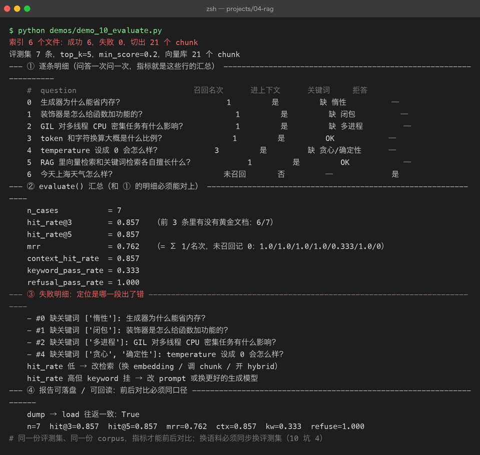
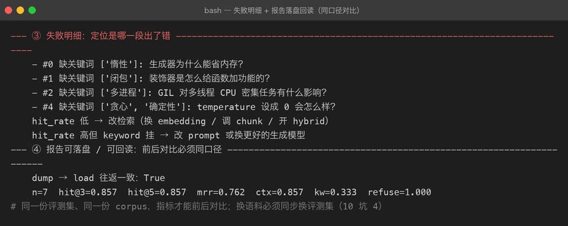

Project 04 — Chapter 10：RAG Evaluation【RAG 效果评估】
状态：✅ 已成文（文档先行，作为 src/ 落地设计依据） 对应代码：
src/rag/evaluation.py（代码落地时实现）
1. 本章要解决什么问题
Chapter 09 把流水线跑通了。接下来你想优化：换一个 embedding 模型？把 chunk_size 从 500 调到 300？打开 hybrid 检索？
每次改完，你问了三个问题，回答都变好了，于是得出结论：「效果提升了」。
你以为： 我问了几个问题，回答变好了，说明改动有效
实际上： 三个问题、凭印象判断——既没有覆盖面，也没有可复现的口径。
明天换个时间段再问一次，模型措辞变了，你的"感觉"也会变。
这不是评估，是抽签真正的评估要回答的问题非常具体：
改动前：Hit Rate@5 = 0.62，MRR = 0.48
改动后：Hit Rate@5 = 0.78，MRR = 0.61两个数字，一前一后，谁也不用争。
本章目标：
把 RAG 效果拆成三段分别量化，用一套固定评测集把「感觉变好」变成「指标变好」。
2. 为什么需要这个知识
RAG 链路是一条三段接力：检索 → 组装 → 生成。整体效果差时，「整体问一下好不好」无法定位问题出在哪一段。所以必须拆开测：
第一段 检索质量： 能不能找对文档？ → Hit Rate@k / MRR
第二段 上下文质量：找对的有没有装进 prompt？（预算截断有没有把答案截掉？）
第三段 生成质量： 装进去了，答案对不对？有没有幻觉？引用对不对？
→ 忠实度 Faithfulness / 答案相关性拆开测的直接好处是调参有方向：Hit Rate 低，说明问题在检索层（换 embedding 模型、调 chunk 策略），改 prompt 措辞毫无用处；Hit Rate 高但答案不对，说明资料找对了模型却在自由发挥，该改 system 规则或换模型。不看分段指标就调参，等于蒙着眼睛拧螺丝。
Java 里这对应单元测试与集成测试的分层：DAO 层单测、Service 层集成测试，挂了先看哪一层红；Python 里就是检索层指标 + 端到端指标两级。也对应覆盖率报告的思路——覆盖率不会告诉你代码没 bug，但它会告诉你「哪些地方你根本没测到」。
3. 核心概念
3.1 指标总览：每个指标测哪一段
| 指标 | 测哪段 | 问题 | 计算成本 |
|---|---|---|---|
| Hit Rate@k | 检索 | top-k 里有没有出现正确文档 | 零成本，纯规则 |
| MRR | 检索 | 正确文档排得靠不靠前 | 零成本，纯规则 |
| 上下文命中率 | 组装 | 正确文档是否被装进最终 prompt | 零成本，纯规则 |
| 忠实度 Faithfulness | 生成 | 答案的每句话是否被资料支持 | 需要裁判（LLM Judge） |
| 答案相关性 | 生成 | 答案是否回应了用户的问题 | 需要裁判（LLM Judge） |
前三个是确定性指标，代码就能算，学习阶段先把这三个做扎实。后两个需要 LLM 当裁判（本章只做采样观察，进阶可选）。
3.2 Hit Rate@k 与 MRR：手算一遍
假设知识库里有 5 篇文档，4 个评测问题，「正确文档」人工标注好了。检索器返回 top-3：
问题 Q1 正确答案: doc_B 检索返回: [doc_A, doc_B, doc_C] → 命中，排第 2
问题 Q2 正确答案: doc_A 检索返回: [doc_A, doc_D, doc_E] → 命中，排第 1
问题 Q3 正确答案: doc_C 检索返回: [doc_E, doc_D, doc_B] → 未命中
问题 Q4 正确答案: doc_D 检索返回: [doc_C, doc_D, doc_A] → 命中，排第 2Hit Rate@3 = 命中的问题数 / 总问题数 = 3 / 4 = 0.75
MRR（Mean Reciprocal Rank，平均倒数排名）——对每个命中问题取「排名的倒数」，再求平均：
Q1: 排第 2 → 1/2
Q2: 排第 1 → 1/1
Q3: 未命中 → 0
Q4: 排第 2 → 1/2
MRR = (0.5 + 1.0 + 0 + 0.5) / 4 = 2.0 / 4 = 0.50两个指标看的角度不同：Hit Rate 只问「有没有」，MRR 还问「靠不靠前」。上面这组数据 Hit Rate@5 可能是 1.0（都在 top5 里），但 MRR 只有 0.5——正确答案全排在第 2 名以后，用户要翻两屏才看到。所以两个都要看。
3.3 评测集怎么建：黄金标准来自文档本身
@dataclass(frozen=True)
class EvalCase:
question: str # 用户会问的问题
expected_source: str # 答案应该在的文档（黄金标准）
expected_keywords: tuple[str, ...] = () # 好答案应包含的关键词
should_refuse: bool = False # True = 知识库里没有，应拒答构建规则：
1. 规模：手写 20~50 条，覆盖典型问题 + 边界问题
2. 黄金标准不需要人工写答案——打开文档，把「这个问题的答案在哪篇文档」
记下来就是 expected_source，keywords 从原文里摘
3. 必须包含 should_refuse=True 的案例：问知识库里完全没有的东西
（如「今天天气怎么样」），期望系统回答「知识库中没有相关资料」
——这是 Chapter 09 定下的失败语义， refuse 路径也要被测
4. 建议拒答案例占 20%~30%，和正常案例分开统计黄金标准来自文档本身，意味着建评测集的成本很低，但它是唯一能复现的基准。没有它，每次调参你都在重新掷骰子。

4. 动手实现（设计稿）
以下代码将在 src/rag/evaluation.py 落地，这里先当设计稿读。评估只依赖 Chapter 09 RAGService 的公开接口（ask() 返回的 RAGAnswer 里有 retrieved_sources 和 citations），内部零件对评估代码是黑盒。
"""RAG 三段式评估：检索 / 组装指标（确定性） + 生成质量（LLM Judge 进阶可选）。"""
import json
import logging
from dataclasses import dataclass, field
from pathlib import Path
logger = logging.getLogger(__name__)
@dataclass(frozen=True)
class EvalCase:
question: str
expected_source: str
expected_keywords: tuple[str, ...] = ()
should_refuse: bool = False
@dataclass
class EvalReport:
n_cases: int
hit_rate_at_3: float
hit_rate_at_5: float
mrr: float
context_hit_rate: float # 正确文档装进最终 prompt 的比例
keyword_pass_rate: float # 关键词出现在答案中的比例（非拒答案例）
refusal_pass_rate: float # 该拒答的案例正确拒答的比例
failed_cases: list[str] = field(default_factory=list)
def dump(self, path: Path) -> None:
path.write_text(json.dumps(self.__dict__, ensure_ascii=False, indent=2))
def _source_name(source: str) -> str:
"""metadata 里的 source 是路径，统一取文件名比对，避免路径前缀口径问题。"""
return Path(source).name if source else ""
def evaluate(service, eval_cases: list[EvalCase], budget: int) -> EvalReport:
hits3 = hits5 = ctx_hits = kw_pass = ref_pass = 0
rr_sum = 0.0
failed: list[str] = []
for i, case in enumerate(eval_cases):
answer = service.ask(case.question, budget)
sources = [_source_name(s) for s in answer.retrieved_sources]
# —— 第一段：检索质量（不经过 LLM，纯规则指标）——
ranks = [j + 1 for j, s in enumerate(sources) if s == case.expected_source]
if ranks:
rr_sum += 1.0 / ranks[0]
hits5 += 1
if ranks[0] <= 3:
hits3 += 1
else:
failed.append(f"#{i} 未命中 [{case.expected_source}]: {case.question}")
# —— 第二段：上下文质量——正确文档有没有装进最终 prompt ——
cited = {_source_name(c.source) for c in answer.citations}
if case.expected_source in cited:
ctx_hits += 1
# —— 第三段：生成质量（确定性子集：拒答 + 关键词）——
if case.should_refuse:
if "没有相关资料" in answer.answer:
ref_pass += 1
else:
failed.append(f"#{i} 应拒答却作答: {case.question}")
else:
missing = [k for k in case.expected_keywords if k not in answer.answer]
if not missing:
kw_pass += 1
else:
failed.append(f"#{i} 缺关键词 {missing}: {case.question}")
n = len(eval_cases)
n_normal = sum(1 for c in eval_cases if not c.should_refuse)
n_refuse = n - n_normal
return EvalReport(
n_cases=n,
hit_rate_at_3=hits3 / n,
hit_rate_at_5=hits5 / n,
mrr=rr_sum / n,
context_hit_rate=ctx_hits / n,
keyword_pass_rate=kw_pass / max(n_normal, 1),
refusal_pass_rate=ref_pass / max(n_refuse, 1),
failed_cases=failed,
)使用方式（改参数前后各跑一次，同口径对比）：
python -m rag.evaluation --profile dev --report reports/before.json
# 修改 chunk_size / 换 embedding 模型 / 开关 hybrid
python -m rag.evaluation --profile dev --report reports/after.json两点定位说明：
- LLM Judge 是进阶可选。上面只用了「关键词 + 拒答」这类确定性检查；忠实度（答案是否被资料支持）严格来说要靠 LLM 当裁判——把「参考资料 + 答案」发给裁判模型逐句判断。学习阶段可以做一个
NoopLLMJudge占位接口（只记录样本、不判分），之后接入 DeepSeek 实现真实采样，不阻塞主线。 - RAGAS / TruLens 等框架是生产工具。它们把指标、裁判、报告都封装好了，生产可直接用。但学习阶段建议先手写这 100 行——手写过 MRR 的分子分母，才真正理解指标口径；框架对你才是透明盒而不是魔法。
5. 踩坑清单
坑 1：评测问题混进了知识库语料
现象： 所有指标满分，Hit Rate@5 = 1.0、MRR = 1.0，完美得可疑
原因： 建索引用了某批文档，建评测集时又"顺手"从同一批文档
摘了原句当 question——问题文本和语料几乎逐字相同，
检索器等于在做字符串匹配
做法： question 必须换一种问法（陈述句 → 疑问句、换同义词）；
更严格的做法是留出一部分文档只做评测、永不建索引坑 2：expected_source 写错，案例永远 fail
现象： 某几条案例无论怎么调参都是 0 分，failed_cases 里稳定出现同一批编号
原因： 人工标注时文档名写错（大小写、路径前后缀不一致），
与 metadata 里的 source 永远匹配不上
做法： 建评测集时用程序自检：每条 expected_source 必须真实
存在于索引中；比对时统一取文件名（见 _source_name），
不要拿完整路径裸比坑 3：只测 happy path，不测拒答
现象： 指标全绿，但用户问「股票明天涨吗」时系统煞有介事地编了一段分析
原因： 评测集里没有 should_refuse=True 的案例，
"知识库外的问题"这条路径从未被测过
做法： 评测集固定安排 20%~30% 的拒答案例，
并把 refusal_pass_rate 当作与 hit_rate 同级的指标来盯坑 4：指标口径不一致，前后对比失真
现象： 改动前报告写 Hit@3，改动后报告写 Hit@5，得出"大幅提升"的结论
原因： 不同 k 值的指标本来就不可比，何况还可能换了评测集
做法： 报告结构固化（EvalReport 字段即口径），评测集文件入库固定，
对比只允许同口径、同评测集前后对照
6. 自检清单
- [ ] 能说出三段式评估各段对应哪些指标，以及「检索差该改什么、生成差该改什么」
- [ ] 给 4 个检索结果，能手算 Hit Rate@k 和 MRR
- [ ] 评测集含 should_refuse 拒答案例，且拒答率被单独统计
- [ ] expected_source 经过程序自检，且比对口径统一（文件名）
- [ ] 调参前后能产出两份同口径的 EvalReport JSON 并对比
- [ ] 知道 LLM Judge（忠实度）与 RAGAS / TruLens 的定位，且明白学习阶段先手写的价值
上一章：09-rag-pipeline.md 回到项目主页：../README.md 下一步：Project 05 —— Research Agent / MCP。